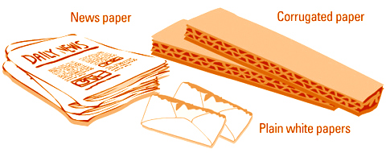

-

The biggest task for paper recycling companies is probably the collection, transporting and sorting of waste paper.
This is because we always add paper to other waste items and get them contaminated with food, plastics and metals.
Sometimes collected paper is sent back to the landfills because they are too contaminated for use. Try to keep waste paper in separate grades at home or in the office —example, do not mix newspapers and corrugated boxes up.
All paper recovered is sent to the recycling center, where it is packed, graded, put into bales and sent to the aper mill. At the mill, all the paper is stored in a warehouse until it is needed.